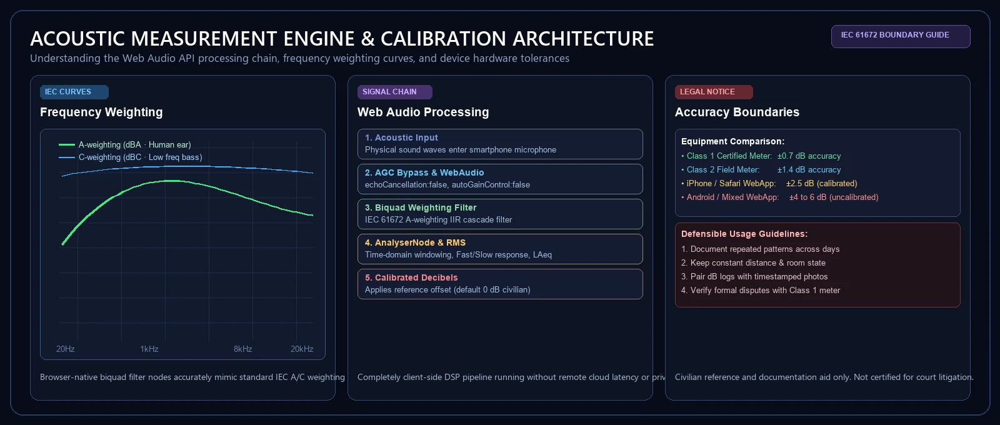

Digital Acoustic Evidence Standards & Measurement Integrity
SOUNDTEST.PRO delivers an objective, tamper-evident digital record of onsite acoustic events via browser-native Web Audio analysis. Here is our engineering architecture, transducer response specifications, and the legal framework for field dispute documentation.

What It Delivers
Real-time A/C/Z frequency weighting filters, Fast/Slow dynamic response, continuous equivalent sound level (LAeq), statistical percentiles (L5/L10/L50/L90/L95), 1/3 octave spectrum analysis, and tamper-evident PDF/CSV evidence reports.
Statutory Metrology Boundary
SOUNDTEST.PRO is engineered for dispute documentation, property management mediation, and municipal complaint filings as an objective record of physical acoustic facts. Statutory enforcement penalties remain governed by certified Class 1/Class 2 instruments under municipal metrology regulations.
Hardware & Transducer Consistency
Consumer microphones incorporate automatic gain controls and distinct frequency responses. iOS devices maintain strict baseline uniformity, while Android and PC hardware configurations benefit from software calibration offsets.
High-Confidence Documentation Protocol
- Standardized positioning: Position microphone 1.2–1.5m above floor level, away from reflective surfaces.
- Contextual documentation: Note window states, ambient room conditions, and active background noise.
- Calibration alignment: Calibrate using an acoustic reference calibrator or certified meter when possible.
- Chain-of-custody retention: Preserve raw audio, spectrograms, timestamp logs, and PDF exports together.